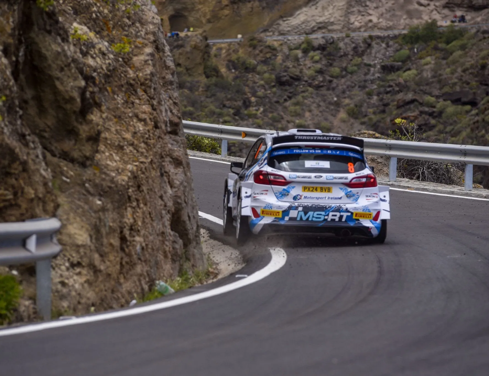
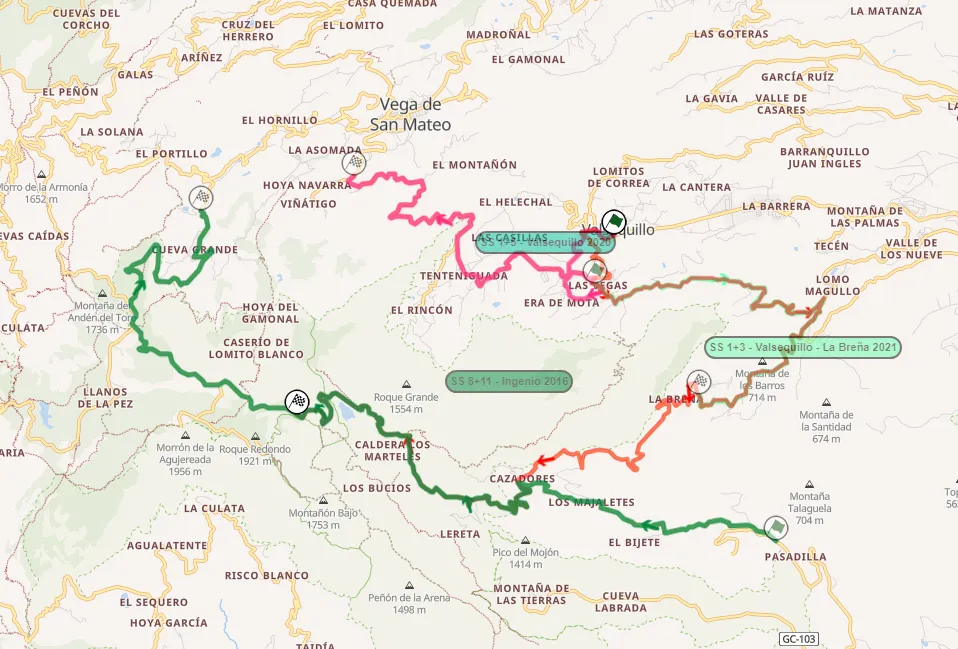
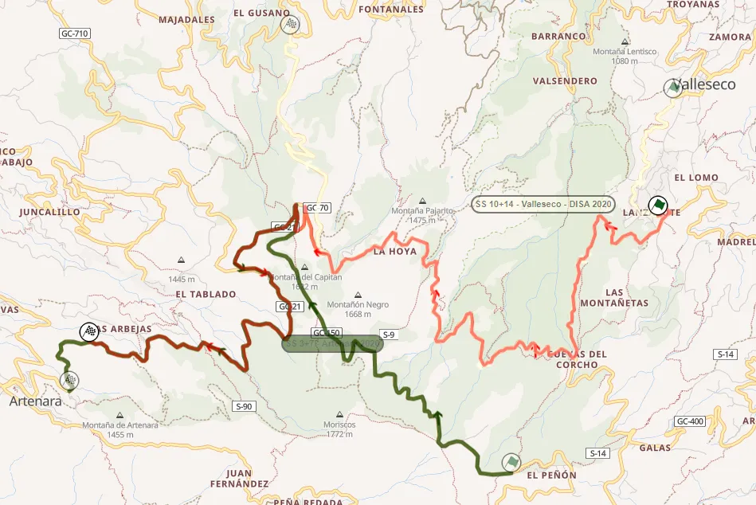
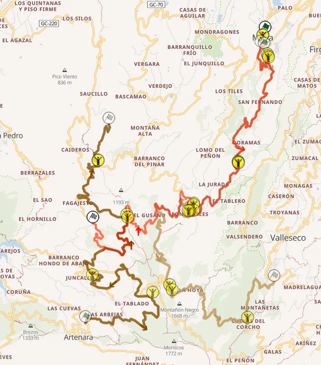
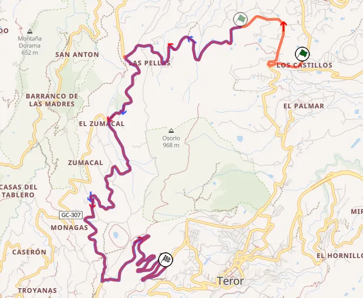
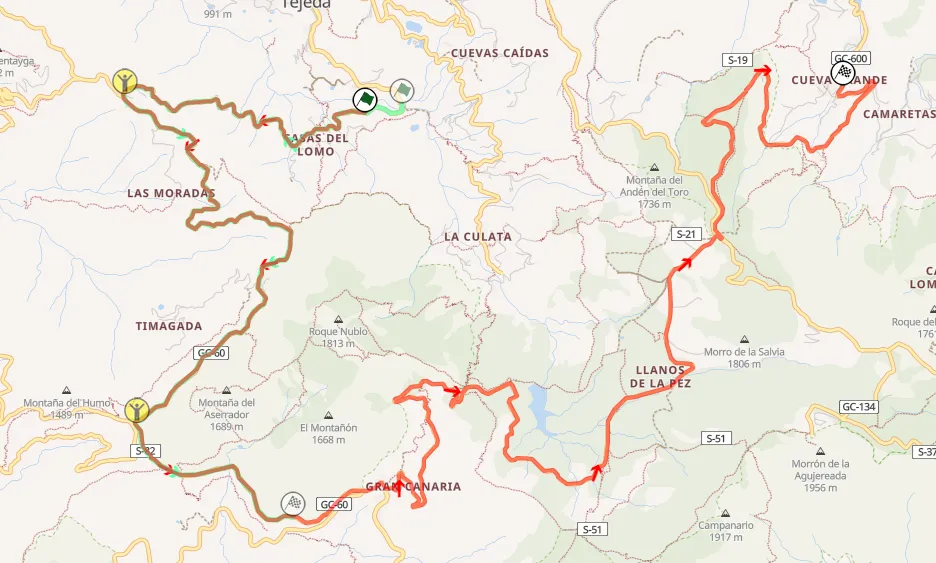
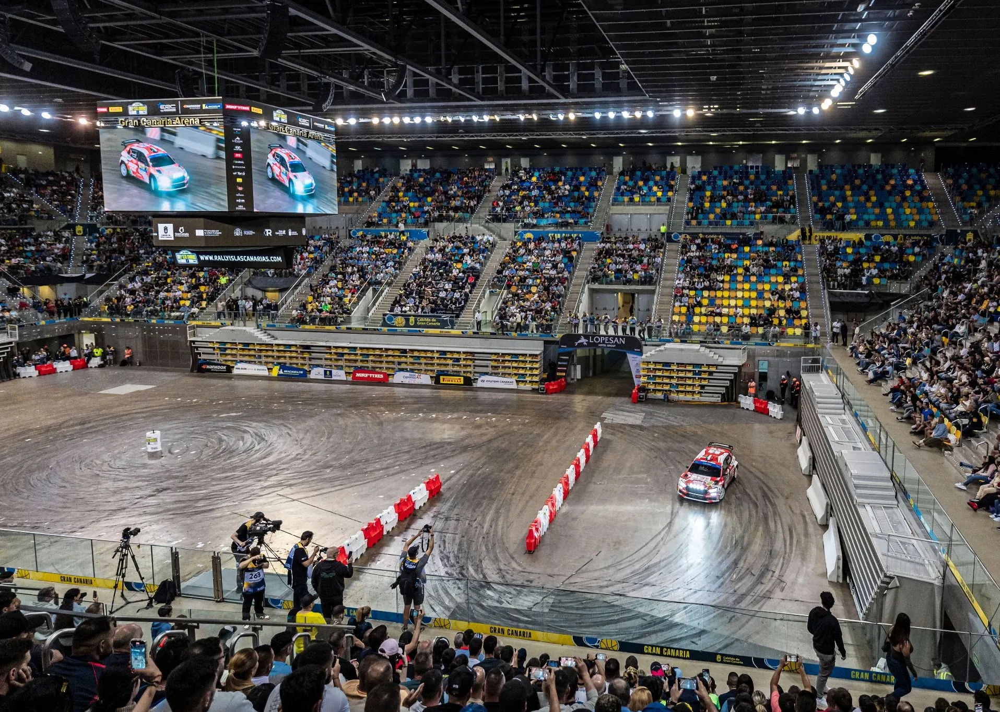
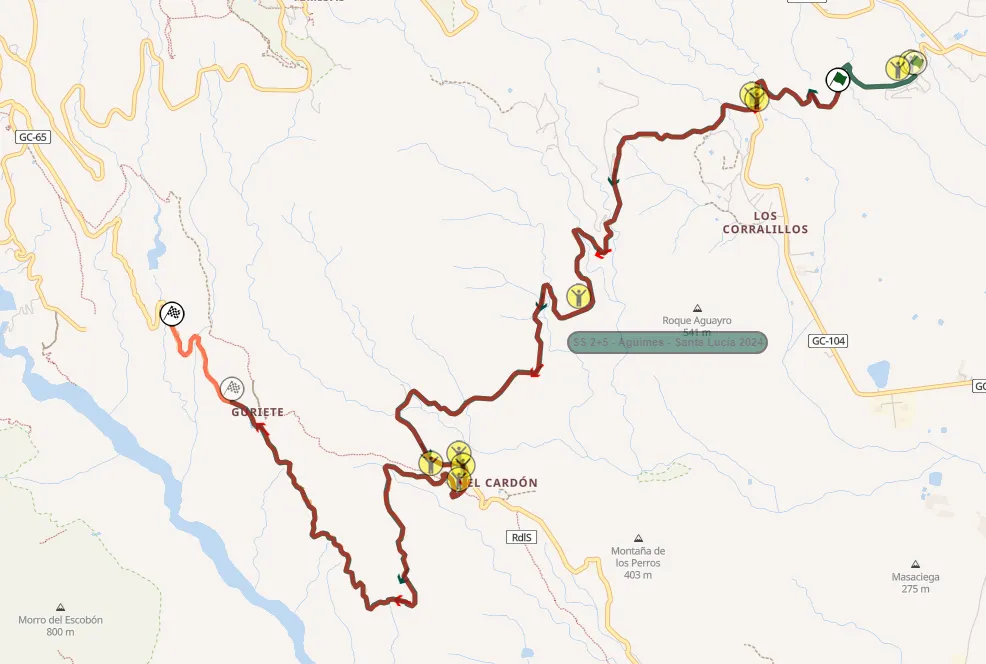
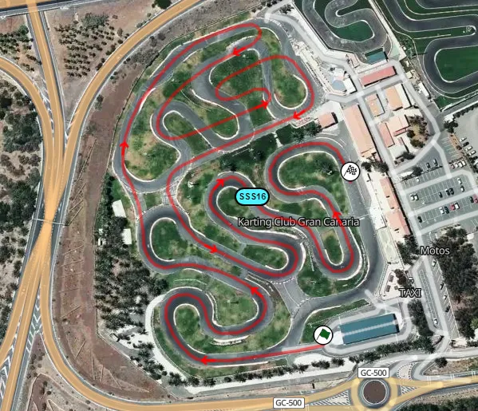

Rally Islas Canarias 2025 - Route Preview
Cover and thumbnail: @World / Red Bull Content Pool
Maps: Rally-Maps.com
Rally Islas Canarias is the first full tarmac round of the 2025 season, and it's a new addition to the WRC calendar. The event has been a staple of the European Rally Championship, and it's the first WRC rally to be held in Spain since Rally Catalunya in 2022. It features fast and flowing tarmac roads, some of which haven't been used in the event in over a decade.
Thursday
Thursday only features the pre-event Shakedown and the Ceremonial Start, which is in the Santa Anna square in the city of Las Palmas.
Shakedown: Santa Brígida - 6.26km
Changes compared to 2024: The stage has never been used in the Islas Canarias Rally before, but has been used frequently in Rally Villa de Santa Brígida.
Stage description: The start of the Shakedown is on a wide and smooth road, that runs through a residential area. At 1.95km, the stage turns to a narrower road that goes downhill. The stage also becomes more technical and slow until the 2.8km mark, where it becomes faster, but the surface of the road becomes more broken and bumpy.
A series of very tight hairpins follows at 4.25km, after which the road again becomes faster/medium speed. The last 700m is on a smoother surface, with mostly the same character.
Friday
Friday is the opening day of the rally, and features two loops of three repeated stages, on the central, and western side of the island. Valsequillo, the day's opener, is the rally's longest at over 26km. La Aldea has not been used in the Islas Canarias Rally since 2003, and even then, not in this direction.
SS1/4 Valsequillo - Telde - 26.32km
Changes compared to 2024: It's essentially a brand new stage. It uses a combination of stages used in local rallies and older Canarias stages. About 1km of the stage was used in this direction in the 2021 Valsequillo stage, with the section from 2.3 to 11.9km never been used before in this direction in the rally, essentially being the Valsequillo - La Breña from the 2021 Rallye Ciudad de Telde. The last 8km of the stage were last used in 2016 as part of the Ingenio stage.

Map of the stage (red) compared to Valsequillo from 2020 (magenta) Valsequillo - La Breña (light green) and Ingenio (dark green)
Stage description: The first 2km are on a medium wide smooth tarmac road. The stage then turns onto a very narrow road upon entering the town of Las Vegas, with crests and tricky tight corners. The section from 3 to 4.6km is in the open, with the road having the same characteristics, but after that it becomes even narrower, with the surface being more broken. The stage becomes slightly wider and smoother at 6.2km, and leaves this road via a very tight hairpin.
The rest of the stage is on a flowing, wide and smooth road, with many fast/medium speed corners. The scenery from 21km is breathtaking, as the stage climbs on to an altitude of 1800m above sea level! That is 1200m higher than the start of the stage. With such a difference in altitude, there could be changeable conditions here, with rain or fog making an appearance at the end of the stage.
SS2/5 Velleseco - Artenara - 15.27km
Changes compared to 2024: The last 4km of SS2 were used in reverse as part of the Artenara - Gáldar stage last year. Parts of the stage are used every year in the rally, but the last time parts of the stage were used in the same direction was 2020, when it was split into 2 different routes.

Map of the stage (red) compared to Valleseco - DISA (white) and Artenara (green) from 2020
Stage description: This one starts off uphill, on a medium-wide road. The surface is smooth, as is the norm for this event, with the stage being mostly medium speed. After the first 3km, the stage becomes twisty and technical. At 9km, the route turns to a very narrow road via an acute hairpin.

It rejoins the previous road after 700m, with another hairpin. After that the stage goes downhill, and is faster than before, but still technical and narrow, with the mountain on one side and the armco barrier on the other.
SS3/6 La Aldea - Mogán - 17.83km
Changes compared to 2024: The stage has not featured in the event since 2003, where it was in reverse, and was last used in 2018 in the Rallye de Maspalomas.
Stage description: La Aldea - Mogan is on a wide and smooth road to its entirety. The first 5km of the stage are uphill, with mostly long fast and medium speed corners. In typical Canarias fashion, the path the crews take on this stage is limited by the mountainside on the left and an armco barrier on the right, meaning the conditions will remain stable for all runners on both passes. The road essentially carves its way on the side of the mountain, and will give some great videos and images.
After a tight turn at 8km, the road becomes narrower and more twisty, with the stage now going downhill. This is perhaps the best part of the stage, as it's technical, but still fast. At about 11.5km, it widens, and it again features mostly long high speed corners. About 3.8km from the finish, the stage begins to climb, becoming twisty once more. The final 800m descend again, with the stage maintaining the same character.
Saturday
Saturday is the longest day of the rally with 124.08 competitive kilometers. It again features two loops of three repeated stages, and also a pass through the Gran Canaria basketball arena in the form of an SSS.
SS 7/10 - Moya - Gáldar - 24.09km
Changes compared to 2024: The first 15.2km were used last year in the Moya - Valleseco stage. Some parts after that were used in reverse in the Artenara - Gáldar stage again from 2024.

Map of the stage (red) compared to Artenara - Gáldar (brown) and Moya - Valleseco (light brown) from last year
Stage description: Saturday's opener starts off with a section inside the town of Moya, in a series of narrow roads, with a donut also at 0.6km. The stage goes uphill almost to its entirety, going up from an altitude of 460m to one of 1200m at its highest.
At 1.3km, the stage turns to a new road in a forest which is initially technical, but then becomes faster. The scenery is significantly more "green" compared to other Canarias stages like Santa Lucia or La Aldea. There is a pass through the town of Fontanales at 11.3km, where there is a very narrow section inside the village.
The tight corner to the right leads to the very tight village section.
At 13km there's a detour on a very narrow road, which in turn leads the stage to a medium wide and semi broken road, which is full of long medium speed corners. After the 19th kilometer, the surface becomes more broken and patchy, and becomes more like a typical stage on the island (mountain on one side, armco and big drop on the other) as it leaves the forest.
The last 2km are on a narrow road that goes downhill. From the onboard it seems that this section could have some pollution on the second pass, especially if there are humid conditions.
The first 15km of the stage are identical to the one from 2023, as seen from this onboard
SS 8/11 - Arucas - Firgas - Teror - 13.75km
Changes compared to 2024: The first 1.95km has never been used before, but apart from that, the stage is identical to SS Teror that was used in 2015, being ran in the dark.

Map of the stage (red) compared to the 2015 Teror stage (purple)
Stage description: The stage starts off with a donut just 0.5km after the start, with the first few kilometers being on a medium wide and fast road, with a handful of medium speed corners. The road is patchy at first, but smoothens out afterwards, and is semi-broken almost until the finish.
Similarly to the previous one, there's more vegetation near the road compared to a typical Canarias stage. At 4.8km there is a junction that leads to a slightly narrower road, that is twistier, more technical, and has cambered turns, which allow the cars to carry more speed through the corners.
At 10km there's a hairpin that leads to the final section of the stage. The road is smoother now, and goes downhill. There's a series of hairpins, that are again cambered, and are well known with the locals. The finish of the stage is just before the town of Teror.
SS 9/12 - Tejeda - San Mateo - 23.3km
Changes compared to 2024: The first 10km of the stage were last used in 2023 in this direction. The full stage was last used in 2011.

Tejeda (red) compared to the 2023 stage (green)
Stage description: The start is on a narrow road that is fast, with many long fast and medium speed corners. Unlike the previous two stages, Tejeda is again on a "mountain/armco" type of road initially. Some of the medium speed corners in this section are again cambered. This is the section where Jon Armstrong had a terrifying crash in 2022.
At 9.1km there is a fast downhill section after which the stage turns to a slightly wider road via a junction. This section is more technical at first, but after about 5km, it becomes medium/fast in terms of speed, also entering a forest at 13.8km. There are some very fast sections, at 16 and 17.52 kilometers.
The stage climbs to an altitude of 1723 meters at 19km, after which it goes downhill, with the last 4km being again fast, with flowing fast/medium speed turns.
SSS 13 - Las Palmas de Gran Canaria - 1.8km
Changes compared to 2024: Identical stage to 2024.

The stage passes through the basketball court of Gran Canaria
@World / Red Bull Content Pool
Stage description: The stage is unique, as it passes through an indoor basketball arena. The rest of the route is on the court's parking lot. Last year, Luis Monzón lost a wheel after hitting a concrete block, and Philip Allen and Simone Bertolotti did the same in 2023.
Sunday
Sunday only features two repeated stages, all on the south of the island, as well as a pass through the Gran Karting Club SSS. There's no service, and the Ceremonial Finish of the rally is in the city of Maspalomas on the south of the island.
SS 14/17 Agüimes - Santa Lucía - 14.97km
Changes compared to 2024: It's basically the same stage as the one used in 2024, just with slightly different finish and start locations.

SS14/17 (red) compared to the 2024 stage (green)
Stage description: This stage is also known as "Era del Cardon". It's on a narrow and broken road with many medium speed corners almost to its entirety. This is another mountain side/armco type of stage, with steep drops. This is the stage where Miklos Csomos had a massive crash in 2023.
At 1.25km the cars will turn right on the well known Corralillos junction. At 3.32km there's a spectacular pass through the mountain, with big rock formations on either side of the road.
At 11.3km the stage becomes twistier, and again broken until about 13km, after which it becomes faster until the finish.
Full broadcast of the 2021 stage, where it was ran in reverse, and with a different finish. You can still get an idea for the route though.
SS 15/18 Maspalomas - 13.47km
Changes compared to 2024: The stage has not featured in this event since 2013, and not in this direction since 1997!
Stage description: It's another stage with mountains and armco barriers on either side, making it a fitting Power Stage as it reflects the character of the rally.
The start of the stage is very fast, with fast flowing corners, on a wide semi-broken road. The road becomes narrower and more medium speed at 5km, with the stage carving its way up the mountain, having a steep drop on one side. At 7.36km the character of the stage becomes more technical, having a series of hairpins afterwards at 8km.
Overview of the series of hairpins
At 8.75km the stage passes next to a viewing point, with the road becoming wider momentarily, and going downhill afterwards. The last 5km are on a medium-wide and fast road, passing next to a theme park at 9.9km, before the stage finish near the Maspalomas cemetery.
SSS 16 Costa Canaria- 13.47km
Changes compared to 2024: Has not been used since 2012.

Map of the stage
Stage description: It takes place in the Gran Canaria Karting Club, and follows the track's layout. It used to be a famous SSS in the rally, especially through the late 90s and early 2000s.
Admittedly, it's not a stage that drivers will enjoy, as the cars will be on a tarmac setup, and any slide they'll do will mean a loss of time for the Sunday standings.
What I would change
Whereas the current route is good, there are some changes I'd have liked. Personally, I would have had the Ceremonial Start in Maspalomas, with SSS1 being in Costa Canarias on Thursday, with Friday having La Aldea - Mogan in reverse, then Acusa, a stage that hasn't been used since 2003, with Maspalomas being the loop's closer, perhaps with a second pass through the SSS in the morning loop. Then Saturday using Valsequillo, the 2023 version of Tejeda, with the loop ending with El Cardon in reverse. Sunday then being the rally's closer with Moya - Gáldar, and Teror being the Power Stage.